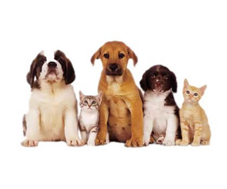

Este servicio es previa cita, no es una urgencia, hay que presentar la documentación respectiva para realizar el trámite que corresponda, somos inspectores oficiales de la Federación Canófila Mexicana con sede en el D.F. desde 1996, cuyo teléfono es el 01 555 655 9330 y en internet: www.fcm.org.mx Ud. podrá verificar la legitimidad correspondiente. En el caso de registros iniciales llamados C.P.R. (Certificado de Pureza Racial) es necesario presentar a su mascota a inspección y deberá ser de raza pura para tener derecho a su certificación. Cuando se trate de una camada, ésta deberá estar completa, no es posible registrar cachorros de una misma camada de manera individual. Toda la documentación deberá presentarse y tramitarse de manera completa. Es necesario ser Socio F.C.M. para realizar cualquier trámite; por lo tanto si es la primera vez que inicia un trámite, lo primero que hará, será inscribirse como socio usufructuario a la Federación Canófila Mexicana. Todo esto lo puede hacer con nosotros, llámenos y le asesoraremos con gusto.
Registrar a su ejemplar tiene como finalidad:
|
|
Dar valor a las crias
En cuanto a sus antecedentes (padres, abuelos y bisabuelos) podemos conocer cuáles son los títulos, campeonatos y certificaciones (de conformación, trabajo, asistencia, deporte) con que cuentan. Nombre, No. De registro, color, procedencia nacional o extranjera, etc. Todo esto para poder mantener o mejorar la raza, evitando así la consanguinidad y los defectos y enfermedades hereditarias. Al analizar toda esta información podemos darnos una idea más clara de lo que tenemos y podemos lograr. |
|
En cuanto a registros (acta de nacimiento), existen tres tipos. 1.- El Certificado de Pureza Racial (CPR), se otorga a cualquier ejemplar de raza pura, pero que se desconoce alguno o algunos de sus antecedentes (padres, abuelos o bisabuelos). Es de color café y válido solo en México. Puede ser CPR inicial (sin genealogía conocida) y CPR con antecedentes. 2.- El Certificado Genealógico; se otorga a los ejemplares que ya han completado las 3 generaciones de padres, abuelos y bisabuelos, y que en su registro aparecen ejemplares con uno o varios números de certificado de pureza racial; es de color verde y válido solo en México. 3.- El Certificado de Pedigree Internacional, se otorga a ejemplares con antecedentes bien conocidos, hijos de ejemplares con certificado de pedigree, en cuyo registro únicamente aparecen números FCM. Es de color azul y tiene validez internacional. |
|
|  |
También brindamos el servicio de gestión de tramites como: Asesoría Pago de cuotas de socio usufructuario o de criadero, transferencias (cambio de propietario), Revalidaciones (reconocimiento de los pedigrees de otros países), Activación del microchip FCM en el sistema LOCA_CAN, Duplicados de registros de pedigree, genealógico o de pureza racial, Registros extemporáneos, Remarcación de tatuajes, Contamos con papelería oficial de la FCM Escaneo y Lectura de microchip´s etc. Cualquier otro trámite que requiera lo podrá realizar con nosotros, previa cita, la idea es minimizar el tiempo de espera. |